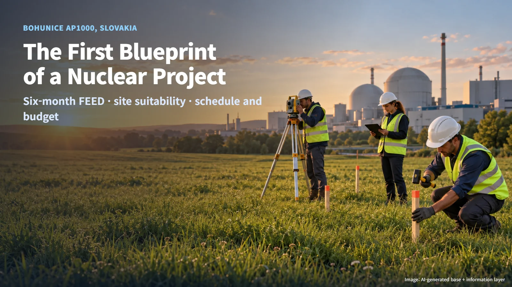
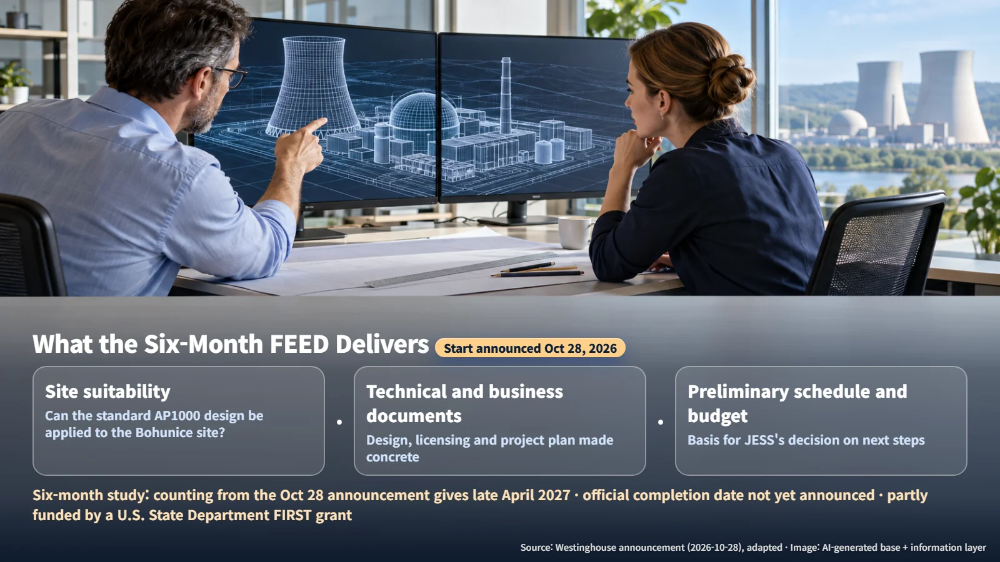
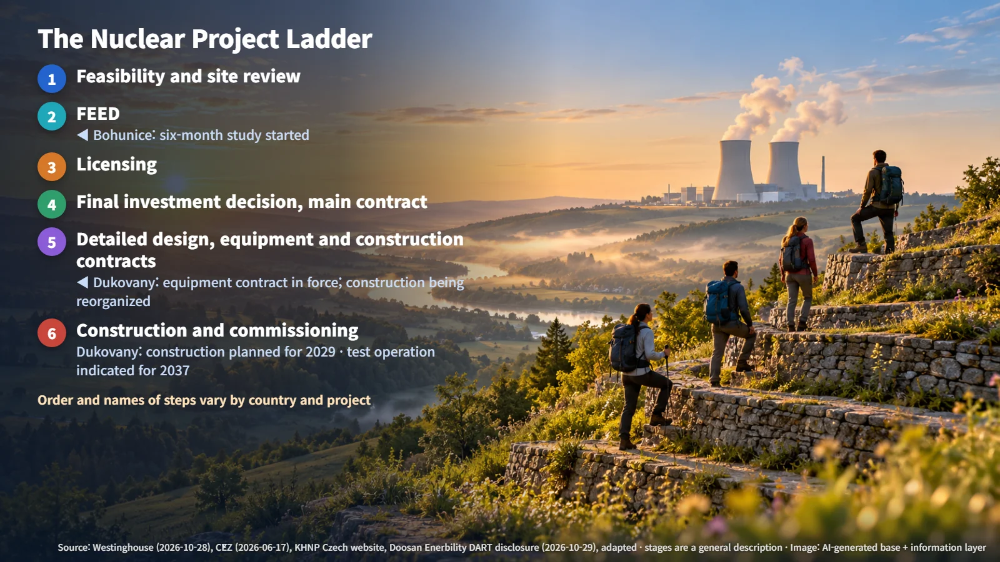

Slovakia · New Build Planning
The First Blueprint of a Nuclear Project: What a FEED Study Decides for Slovakia's Bohunice AP1000
Westinghouse has started a six-month FEED study for one AP1000 unit at Jaslovské Bohunice, producing site suitability, a preliminary schedule and a budget.
When a new nuclear plant is announced, the first questions are usually "When will it be finished?" and "How much will it cost?" A nuclear project answers those questions gradually, through a series of reviews and decisions taken one after another. The October 28 news from Slovakia concerns one of the earliest of those steps: a FEED study. Let's look at what a FEED study settles and where this project stands today.

Westinghouse Takes On a Six-Month Study
On October 28, Westinghouse announced that it has started a FEED study for one AP1000 unit at the Jaslovské Bohunice site in Slovakia. FEED (Front-End Engineering and Design) is the stage of basic design and project feasibility review. It resembles what happens before building a house: surveying the land, drawing the basic plans, and producing a first estimate of construction time and cost.
The client is JESS, the company responsible for developing new nuclear capacity in Slovakia. JESS is wholly owned by the state-owned company JAVYS. Part of the study cost is covered by a grant from the U.S. Department of State's FIRST program, and the subject of the study is a single large AP1000 reactor.
The study runs for six months. Adding six months to the October 28 announcement date, the calculation gives roughly the end of April 2027. An official completion date has not been announced. When the study is complete, the preliminary schedule and budget for the Bohunice project will be set down in documents, and JESS has said it will use the results as the basis for deciding the project's next steps.
What a FEED Study Delivers: Suitability, Preliminary Schedule and Budget
The study has three main deliverables.
1. Site suitability assessment: an evaluation of whether the AP1000, a standard design (a design fixed in advance for common use across many sites), can be applied to the conditions of the Bohunice site. 2. Technical and project documents: documents that flesh out the design, licensing and project plan. They set out what needs to be discussed with the regulator and which design requirements are specific to the site. 3. Preliminary schedule and budget: the first reference figures the owner will use when making its next decisions.

Even with a standard design, the differences between the site's characteristics and the standard design have to be identified and reflected in the design details. A FEED study brings those differences to light early and creates the starting point for the numbers, which are then refined through detailed design and contracting. The current announcement leaves the total construction cost, the construction approval date and the commercial operation date unpublished. With this start, the idea of "building a nuclear plant" moves up one level, becoming a subject of review backed by numbers and documents.
The Project Ladder, and Where Bohunice Stands Now
Nuclear projects generally climb a ladder like the one below. The order and the names of the steps can vary somewhat by country and by project.
1. Feasibility and site review: the broad direction is set, including where to build and which reactor type to use. 2. FEED: the preliminary design, schedule and budget are produced. 3. Licensing: the regulator reviews safety and authorizes construction. 4. Final investment decision and main contract: the owner commits to actually investing (FID, Final Investment Decision) and signs the contract to carry out the project. 5. Detailed design, equipment orders and construction contracts: drawings are developed to a buildable level, and major equipment and construction work are contracted. 6. Construction and commissioning: after on-site construction, the plant goes through test operation and then enters commercial operation.
Bohunice has just stepped onto the second rung, FEED. The construction permit and the final investment decision are the steps that follow, built on the FEED results. Each rung fixes more of the project, so the most accurate way to read progress is to ask which rung a project is on and what has been settled there.

Comparing It with Neighboring Dukovany, and the Next Checkpoints
The new nuclear project at Dukovany in the Czech Republic, also in Central Europe and in the news the same week, is several rungs further up. Around June 2025, the owner EDU II and KHNP signed the construction contract (main contract) for two units, and on December 16, 2025, the supply contract for Doosan Enerbility's reactor and turbine-generator equipment was signed. In April 2026, KHNP submitted the conceptual design, and it plans to build a detailed 3D model of the site using geological survey data from the field. On October 29, KHNP notified the construction consortium of its intention to end negotiations, and preparations to reorganize the construction arrangement are now under way.
The two projects share a common thread. Bohunice is assessing whether the AP1000 can be applied to the site, while the Dukovany conceptual design adapted the standard APR1000 to Czech law, the site's characteristics and the owner's requirements. In both projects, the starting point is fitting a proven standard design to a specific piece of land and a specific country's rules.
The timelines also offer a useful sense of scale. ČEZ plans to start construction at Dukovany in 2029, and KHNP's Czech website indicates 2037 for test operation of the first unit. Calculating 2037 − 2029 gives about eight years, showing that a large nuclear plant still needs a long stretch of time after construction begins. A six-month FEED study is the work of drafting the first timetable for that long journey.
For Bohunice, there are three checkpoints to watch next: the publication of the study scope and the preliminary schedule and budget, JESS's follow-up project decision based on those results, and the progress of discussions with the regulator along with site-specific design requirements. The documents produced by the FEED study will be the basis for this project to climb to the next rung of the ladder.